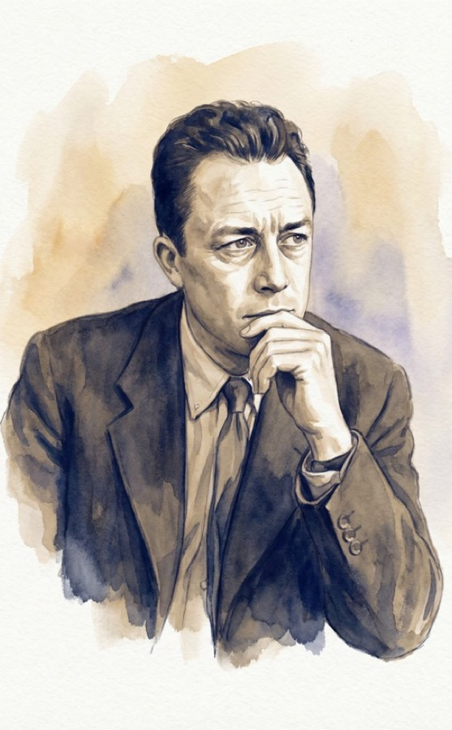
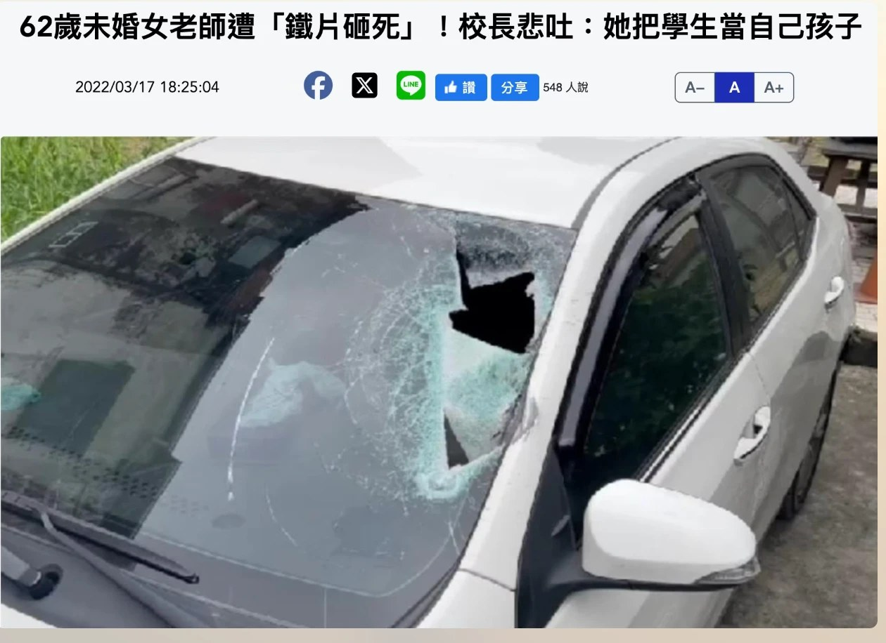
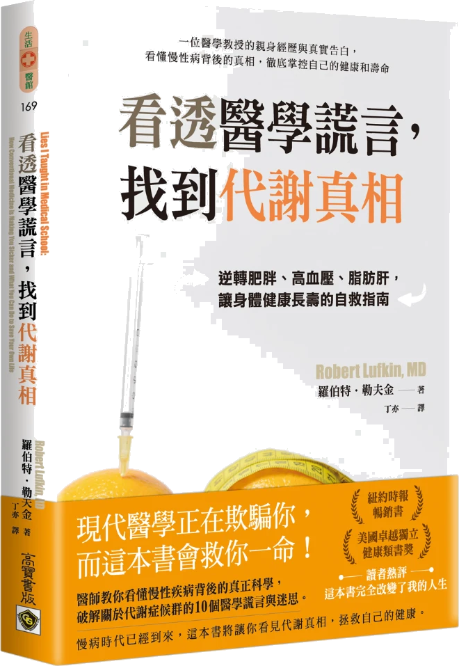
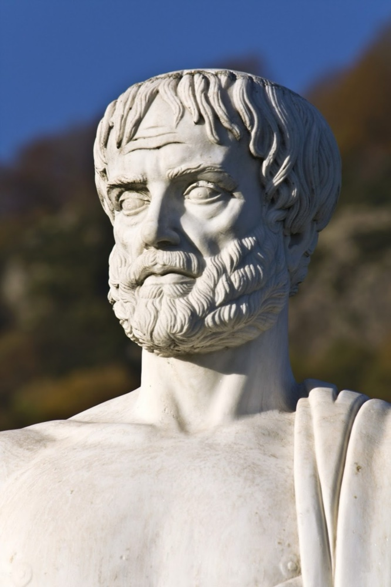
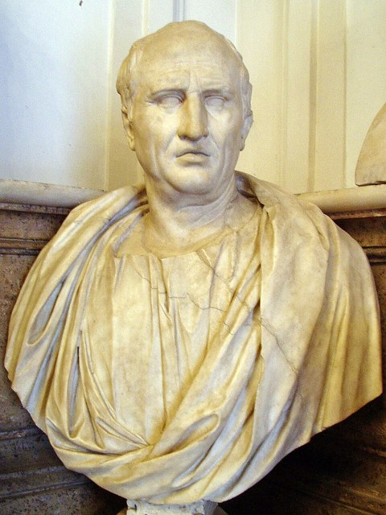
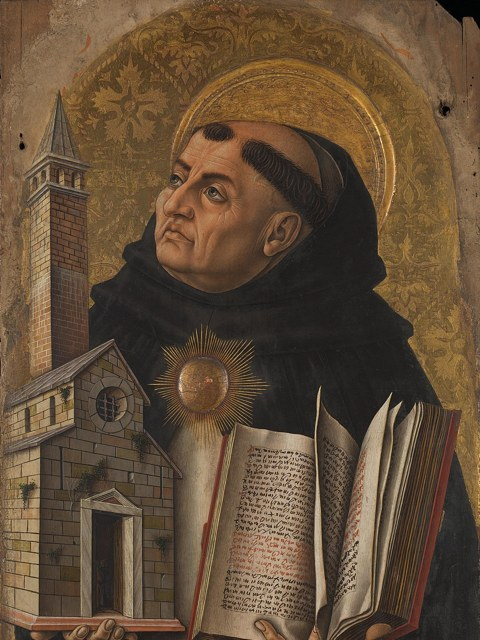
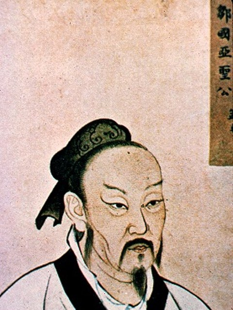
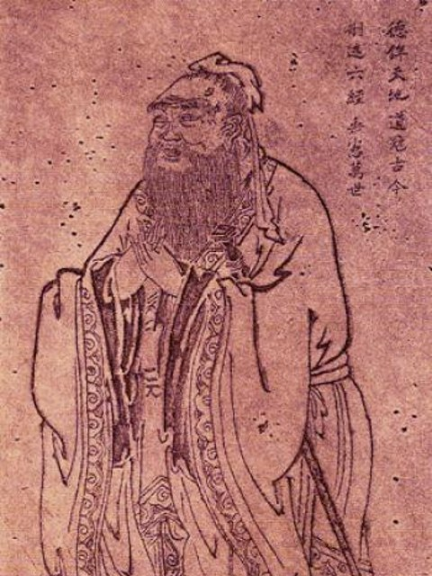

價值思辨
人應如何生活？在每一個抉擇當下又該怎麼選擇？
今天的地圖：六節課，一條路
昨天問「人應為何而活」（終極關懷）；今天問「人應如何生活」——讓我們一起在各種價值衝突中，學習慎思明辨。
- 第 1 節 從課前作業談起——價值思辨無所不在（09:10–10:00）
- 第 2–3 節 倫理學複習——〈考城隍〉與六道倫理思辨題（10:10–12:00）
- ── 午休 · 下午進入價值思辨導論與方法 ──
- 第 4 節 價值思辨導論——它的範疇、定位與方法（13:30–14:20）
- 第 5 節 價值思辨方法論——東西方智慧的五種思辨方法（14:30–15:20）
- 第 6 節 當前重大價值爭議與總結（15:30–16:20）
從課前作業談起
價值思辨並不只關乎道德，它早已滲進我們每天的價值選擇裡，就讓我們先從課前作業的兩道暖身題開始談起。
課前作業：兩道暖身題
若必須在正義與母親之間抉擇，卡繆會怎麼選？什麼背景與價值觀導致他這樣選？這與他的存在虛無主義有何關連？——可與 AI 對話，但要提出你自己的主張與論述。
美國於 2026/1/7 發布《2025–2030 飲食指南》，它和原本的飲食金字塔有何不同？又和你長期習慣的飲食觀有何出入？——探討、反思，寫成文字。
一題探討終極信念與價值排序的關係（承昨天的終極關懷），一題探「日常生活裡的價值思辨」。
分兩題討論，掃 QR 把全組精華打上來
靈修 1＋3 組 → 討論第 1–3 組（第一題·卡繆）；靈修 2＋4 組 → 討論第 4–6 組（第二題·飲食指南）。每組 8 人（併坐後報數 1-2-3 分組），各組派一位掃自己的碼，把討論精華打上來。
第1組 · 第一題 卡繆會怎麼選
第2組 · 第一題 卡繆會怎麼選
第3組 · 第一題 卡繆會怎麼選
第4組 · 第二題 飲食指南改了什麼
第5組 · 第二題 飲食指南改了什麼
第6組 · 第二題 飲食指南改了什麼
第一題參考：卡繆會怎麼選？

「我一向譴責恐怖。但此刻有人在阿爾及爾的電車上放炸彈，我的母親可能就在那班車上。如果這就是正義，我寧可選擇我的母親。」
- 他會選母親——但重點不是親情高於正義，而是拒絕「以正義之名、盲目傷害無辜」的恐怖；流行的「正義 vs 母親二選一」其實是被簡化的誤引。
- 背景：阿爾及利亞戰爭陷入恐怖與報復的螺旋，而卡繆的母親就住在首都阿爾及爾。
- 與存在虛無主義的關連：他直面「荒謬」（宇宙沒有現成的終極意義），卻拒絕滑向虛無主義——不接受「既然無意義，為了理念就什麼都可以」。
- 《反抗者》以具體的人、不傷無辜為價值底線：「我反抗，故我們存在。」存在的虛無，不必然導致道德的虛無。
存在虛無，將導向道德虛無？

一位 62 歲、未婚的女老師，開車到校途中，在快速道路上被掉落、飛起的鐵片砸中、不幸罹難。校長哽咽：「她把學生當自己的孩子照顧。」
她，正是我們生命教育學分班的學姐！
她一生奉獻給學生——若一切終歸虛無，這份奉獻、乃至善惡本身，又有什麼意義？
道德虛無主義，並不是說人不再有道德感，而是道德價值失去了形上與永恆的基礎——這正是「存在虛無主義將導向道德虛無主義」的隱憂。
第二題參考：兩個飲食金字塔
原本的飲食金字塔（1992）
 油脂・糖 少量
奶類 2–3
肉魚蛋豆 2–3
蔬菜 3–5
水果 2–4
穀類・澱粉 6–11
油脂・糖 少量
奶類 2–3
肉魚蛋豆 2–3
蔬菜 3–5
水果 2–4
穀類・澱粉 6–11
2025–2030 新版（上下顛倒）
 蛋白・乳
蛋白・乳健康脂肪 蔬菜
水果 全穀
| 比較 | 原本金字塔 | 2025–2030 新版 |
|---|---|---|
| 基底·吃最多 | 穀類・澱粉（6–11 份） | 優質蛋白＋健康脂肪（牛排・全脂奶・奶油） |
| 核心訴求 | 低脂、以澱粉為主 | 「吃真食物」，少吃高度加工 |
| 主要限制 | 油脂與糖（頂端少量） | 精緻碳水、添加糖（每餐糖 ≤10g） |
資料：美國《2025–2030 飲食指南》（2026/1/7 USDA／HHS 發布）。
醫學博士勒夫金的親身教訓

羅伯特·勒夫金（Robert Lufkin, MD）著・高寶書版
醫學博士羅伯特·勒夫金（Robert Lufkin）一生奉行「低脂、避膽固醇」的主流飲食，卻接連罹患多種慢性病。
他發現：阿茲海默症、心臟病、糖尿病、關節炎看似各自獨立，其實同源——都來自代謝失衡。
低脂飲食非但沒讓人更健康，反而讓許多人不知不覺中病得更重。
資料：今周刊報導（businesstoday.com.tw，2026/6），節錄自上書。
為什麼把蛋白質放回飲食的最底層？
2026 年 1 月，美國《2025–2030 飲食指南》被形容為「歷史性翻轉」——蛋白質回到飲食的最底層，成為每日核心基礎。這不是流行，而是老化社會的生存策略。
- 老化太快、肌少症與失能人口暴增
- 醫療與長照成本開始崩潰
- 「低脂・高碳」三十年的代價：中年多重慢性病 16%→32%、成人達 40%、健康壽命首次下降
60 公斤長者 ≈ 每日 72–96 克蛋白質
三項配套：配阻力訓練・分散三餐吃・遠離超加工
資料：美國《2025–2030 飲食指南》（2026/1 發布）；及今周刊相關報導（businesstoday.com.tw，2026/6）。
價值思辨無所不在
從個人生活一路延伸到社會與終極信念——在在說明了每一個層次都需要價值判斷，而價值判斷則以價值思辨為前提。
個人生活
飲食運動、生活美學、生涯規劃、單身或結婚、是否生養孩子……
社會與制度
死刑存廢、轉型正義、言論自由與政治正確的邊界、歧視、平權……
人生終極信念
人為何而活、愛與慈悲是不是最高價值、生命的意義何在……
倫理學複習
在進入價值思辨之前，先複習過去學過的倫理學——從《聊齋》〈考城隍〉的兩種道德判斷，到你在基本倫理學與應用倫理學的收穫與疑問。
題一〈考城隍〉
《聊齋誌異》開卷首篇。宋公被召至冥府，應試城隍之職——神明只出了一道短短的考題，宋公的回答更傳誦至今。
- 讀〈考城隍〉，找出：① 神明出的考題；② 宋公的回答。
- 再用兩種道德判斷（對「行為者」的善惡、對「行為」的對錯）討論宋公的回答。
題二 動機的善惡，要如何判斷？
兩種道德判斷中，「道德善惡」評價的是行為者的意志：道德善，就是願意追求正確道德實踐的意志——簡單說，就是「是否忠於良心」（Gewissenstreu）。
但「忠於良心」要能成立、要能歸責於人，並不是憑空而論——它預設了行為者具備某些條件。
一個人的動機（意志）善惡，究竟要依據什麼來判斷？要能為自己意志的善惡負責，必須先滿足哪些條件？
參孫效智〈兩種道德判斷——論「道德善惡」與「道德正誤」的區分〉。
題三 Pojman 推人案
「幾乎所有的倫理學系統，特別是康德，都接受動機的道德相關性。將行為者的意圖納入考量，為完整評價任何行為都是非常重要的。兩個可能相同的行為，其中一個在道德上應受譴責，另一個在道德上卻可被接受。想想約翰將瓊安從崖上推下、導致瓊安腿斷掉的行為。在情境 A 中，約翰怒氣沖沖地意圖傷害瓊安；在情境 B 中，約翰看到一支飛刀射向瓊安，因此意圖拯救她。情境 A 中約翰的行為很清楚是錯的，但情境 B 中他則做了一件對的事。」
——Louis P. Pojman《Ethics: Discovering Right and Wrong》
但他進一步主張：由於 A、B 是同樣的推人行為，故其道德差異的源頭只能在動機上去尋求，由此可見動機的重要。
問題是：A、B 真的是「同樣的行為」嗎？我們該如何理解「行為」？行為的對錯，真的是由動機的善惡決定的嗎？
題四 張三毒老婆案
張三想毒死生病的妻子、好繼承遺產——這是謀殺的惡意圖。
但張三不知道：他要給妻子吃的那帖「毒藥」，
其實是世上唯一能治好她的良藥。
哲學家 Thomson 認為：由於這帖藥其實是解藥，張三在道德上可以把它拿給妻子吃；並據此主張意圖無關於行為對錯的判斷。
你同意 Thomson 的觀點嗎？給妻子吃下那顆藥究竟是對的還是錯的行為？又是什麼導致它的對錯？
案例出自 Judith Jarvis Thomson；亦見孫效智〈意圖相關或無關倫理〉之討論。
題五 過失致死、傷害致死與殺人的區別
用倫理學的四種結果概念（F／f／I／A），依序討論三類問題：
- 這四種結果概念（F、f、I、A）彼此有什麼關係？
- 用這四種概念，如何理解「過失致死」「傷害致死」「殺人」？
- 這三者的法定刑，何以輕重有別？
- F（foreseeable）合理可預見的結果
- f（foreseen）行為者實際預見的結果
- I（intended）行為者意圖達成的結果
- A（actual）行為實際發生的結果
- §13 故意・§14 過失
- §17 加重結果罪（須「能預見」始適用）
- §271 殺人・§276 過失致死・§277 傷害（II 致死）
條文依《中華民國刑法》第 13、14、17、271、276、277 條。
題六 開槍射擊案（30 年上字第 2671 號）
上訴人率人向被害人屋內開槍射擊，雖因被害人事先走避未遭殺害；然上訴人既認其尚在屋內而開槍，不能謂無殺人事實之認識及發生死亡結果之希望。其犯罪結果之所以不能發生，係由於被害人事先走避之意外障礙，故上訴人應負故意殺人未遂之責。
最高法院 30 年上字第 2671 號判例（要旨改寫）
- 本案當事人採取的是什麼行為？（試以行為本身／行為方案／行為整體分析）
- 從倫理學角度，本案判決「主觀上具故意、客觀上殺人未遂」，是否妥當？
倫理學複習：六題總覽
六組各認領一題（第 N 組 → 題 N），討論後掃 QR 把精華打上來。
六組討論：掃 QR 上傳精華
第 N 組討論第 N 題；各組派一位掃自己的碼，把全組討論精華打上來（不只一句、可分多次），投影幕即時顯示。
第1組 · 題一〈考城隍〉
第2組 · 題二 動機的善惡
第3組 · 題三 Pojman 推人案
第4組 · 題四 張三毒老婆案
第5組 · 題五 三罪的區別
第6組 · 題六 開槍案（30 上 2671）
題一〈考城隍〉解答
神明的考題（八字）：
一人二人，有心無心。
宋公的回答：
有心為善，雖善不賞；
無心為惡，雖惡不罰。
——〔清〕蒲松齡《聊齋誌異·考城隍》
無論行善或為惡，動機都很重要。行善者別有居心，不是為了行善而行善，其善行沒有道德價值，而不應得到道德的獎賞；為惡者若是無心之過，不知所為者為惡，也不應論以道德的懲罰。
題二 意志善惡之道德判斷
題三 三種行為觀
- 行為方案 ＝ 行為本身 ＋ 情境（結果）
- 行為整體 ＝ 行為方案 ＋ 意圖（動機）
「行為本身」無法做道德判斷。能做判斷的是——
· 行為方案的對錯：繫於行為的客觀性質，不繫於動機。
· 行為整體的善惡：才與行為者的動機相關。
題三 飛刀例的道德判斷
Pojman 忽略了「情境」。「推人」這個行為本身，無法判斷對錯；但不同的情境，使同樣的推人成為不同的行為方案——有飛刀時，推人在客觀上就是「救人」。行為方案的意義既由客觀情境決定，其對錯便能據以判斷，而這判斷並不取決於動機。動機的善惡，只在「行為整體」的層次，才影響行為的道德性質。
題四 張三毒老婆案的道德判斷
那帖藥恰好是解藥，老婆因此痊癒（客觀結果 A）。
→ 張三「做了一件道德上正確的事」。
→ 懷惡意圖也能做對的事，故主張意圖無關。
張三認知裡那是毒藥，預期會毒死老婆（預期結果 F）。
→ 他選擇的行為方案其實是「毒殺」。
→ 在道德上是錯誤的行為。
道德判斷應依行為人合理預期的結果（F），而非他認知之外的客觀事實（A）——人無法為自己所不知道的事負責。在張三的認知裡，他拿的是毒藥、預期毒死老婆，他做的就是「毒殺」這個錯誤行為。Thomson 的錯誤有二：① 客觀論——誤把 A 當判準；② 誤以為意圖善惡與行為對錯沒有關聯，因而主張意圖無關倫理。
行為概念及道德判斷
題五 解答：用 F／f／I／A 區別三罪
巢狀關係：I ⊂ f ⊂ F（意圖 ⊂ 實際預見 ⊂ 合理可預見）；A＝實際發生的結果。刑法論罪看行為整體，是事後判斷。
| 罪名 | 意圖 I（想達成的） | 死亡結果的落點 | 條文・法定刑 |
|---|---|---|---|
| 過失致死 | 無（死亡不在 I） | 在 F−f（能預見而未預見），且在 A | §276｜5 年以下 |
| 傷害致死 | 傷害（非死亡） | 在 F−f，且在 A | §277 II｜7 年以上～無期 |
| 殺人 | 死亡 | 在 I（⊂ f ⊂ F），且在 A | §271｜10 年以上／無期／死刑 |
三者客觀結果都是死亡；刑法判的是行為整體，故量刑主要看意圖的惡性：殺人（目的即致死）＞傷害致死（目的是傷害、非致死）＞過失致死（既無傷害亦無殺人意圖），罪責依序遞減。
關鍵：死亡若落在 f 裡，去做就等於死亡在 I 裡（§13 II「預見且不違背本意，以故意論」）＝殺人；沒有「過失殺人」，只有「過失致死」。
題六 解答：開槍案的「故意」與「未遂」
- 行為本身：開槍射擊。
- 行為方案：向（預期有人的）屋內開槍。
- 此行為方案就是「擊斃他人」——不是因為當事人有殺人之故意，而是因為該行為方案本身就有擊斃他人之可能，亦即 f 中有殺人。
- 故意以 f（行為人主觀預期的結果）為準，非客觀事實 A：行為人明知屋內有人、預期開槍可能擊斃 (f)，仍開槍 → 故意。
- 未遂來自 A：被害人事先走避、未死，是意外障礙 → 故意殺人未遂。
刑法以行為人主觀預期的結果 f 判斷「故意」與「行為方案」，而非其認知之外的客觀事實 A——否則當 A 與 f 有落差時將無從定罪。本案以 f（明知有人、預期可能擊斃）判為故意殺人，再以 A（走避未死）判為未遂，與倫理學「以行為人主觀認知 f 作判準」一致，故判決妥當。
補充：有 f 而行動，是否必然「希望」其發生？一般是；但兩惡相權的特例（如擊落載核彈客機）屬「間接意圖」（Kagan），法律仍一律視為故意。
價值思辨導論
在學「怎麼思辨」之前，先把四件事說清楚：它的範圍、它的定位、什麼才算「方法」，以及它和規範底線的關係。
一、價值思辨的範圍問題
價值思辨並非只涉及道德問題。在生活的不同層面，都有價值思辨的需要。
- 飲食運動、生活美學（喝茶、咖啡或美酒）——美雖然主觀，卻也不能完全排除客觀因素
- 生涯規劃——考研究所或就業？單身或結婚？是否生養孩子？
- 而這些，也可以拉到人生召喚與理想的高度，帶著責任、承擔與世界觀的重量
思辨的框架，是在每個人獨特的主客觀條件下，做利弊得失的比較。
二、價值思辨需要豐厚的專業知識與經驗
真實議題的價值思辨，從來不是「光憑直覺表態」，而要建立在對特定領域的理解上：
真實議題沒有專業知識與經驗作底，價值思辨便容易淪為意識形態或表面的爭執。
三、規範／底線，與價值思辨之間
- 透過價值思辨去證成、確認、解構或重構道德規範或底線
- 而後服從、持守那些經過確認或重構的規範與底線
以「說謊」為例：我們先思辨「為什麼不該說謊／什麼情況例外」，確認了規範之後，再持守它。
——思辨不是為了取消規範，而是為了讓規範的基礎更穩固，界線更清楚。
價值思辨方法論
東西方智慧累積下來、值得參考的五種思辨方法。它們還不是一套完整理論，卻足以讓抉擇有所依憑。
五種價值思辨方法：總覽
前提是「不完整的拼圖」——沒有完美的理論，但人生仍必須抉擇。以下五種方法（素養），足以讓抉擇有所依憑。
- 兩惡相權取其輕——害之中取小，也是一種善
- 基本人權——維護人性尊嚴的底線價值
- 比例原則——更精緻的「兩惡相權」，違憲審查的核心
- 正義原則——追求共善；等者等之、不等者不等之
- 價值的一與多——不以一害多，也不以多害一
前提：不完整的拼圖
東西方累積的價值思辨方法，還沒有形成一套完整、嚴密的理論體系。
- 任何個別原則都可能被挑戰——目的論與義務論的論辯仍未結束
- 效益主義與正義論的糾葛，也仍在進行中
儘管如此——人生必須實踐，實踐必須抉擇，抉擇必須價值思辨。
1. 兩惡相權取其輕：西方的源頭
當沒有「全善」可選時，害之中取其小，本身就是一種善。西方智者，所見略同——

較小的惡，比大惡更可取；而凡可取者，皆是善。
《尼各馬可倫理學》

兩惡之間，永遠應選擇較小者。
《論義務》（De Officiis）

兩者都有危險而須抉擇時，當選擇招致較小之惡者。
《論君王》（De Regno）
兩惡相權取其輕：東方的回響

墨子
「斷指以存腕，利之中取大，害之中取小也；害之中取小，非取害也，取利也。」
取較小之害，其實是取利。《墨子·大取》

孟子
「嫂溺援之以手者，權也。」
救命重於守禮，是為權變。《孟子·離婁上》

孔子
「可與共學，未可與適道；可與適道，未可與立；可與立，未可與權。」
能守原則，未必能權衡。《論語·子罕》
朱熹：「常道人皆可守，權非體道者不能用也。」
兩道難題，現場投票：你覺得「可以」嗎？
① 電車難題
扳道岔讓電車轉向，犧牲 1 人、救 5 人——可以嗎？
② 器官移植難題
殺 1 名健康者、取器官，救 5 名瀕死病人——可以嗎？
這兩題的直覺，推翻了「兩惡相權取其輕」嗎？
① 電車案例
電車已經衝向 5 個人，你扳道岔，只是把這個本來就存在的危險「轉個方向」。
那 1 人的死是順帶發生的，不是你救人的手段——所以多數人覺得可以。
② 器捐難題
5 名病人是生病、自然走向死亡，不是誰造成的。
但要救他們，你得親手殺掉一個健康的人、把他當「器官倉庫」——他的死，正是你救人的手段。這等於主動製造一樁謀殺，所以幾乎所有人覺得不可以。
③ 原則被推翻了嗎？
沒有。它從來不是「比人頭」（5 比 1 就選 5），而是比哪一個壞結果更糟。
器捐案裡，「謀殺無辜＋從此沒人敢上醫院」遠比「讓病人自然病故」更糟。所以「取其輕」反而要我們不可以殺——原則沒被推翻，是被正確運用。
＊「把胖子推下橋擋電車」太不真實，給不了現實世界的指引，略過。
2. 基本人權
意義：個人或群體「作為人」與生俱有的權利，涉及維護人性尊嚴最重要的價值，如生命與自由。
- 《世界人權宣言》（1948.12.10 聯合國大會通過）——確立人權為憲法、國際法的規範性標準
- 德國基本法第 1 條：人的尊嚴不可侵犯，尊重與保護它是所有國家機關的責任
- 我國憲法第 7–21 條：平等權、人身自由、言論、信仰、生存權、工作權……
3. 比例原則
比例原則是更精緻的「兩惡相權取其輕」，是法學上判斷法律、判決、政府干預是否合憲的最主要方法。衍生原則：應然以能夠為前提（Ought Implies Can）。
- 憲法第 22 條：人民之自由權利，不妨害社會秩序公共利益者，均受保障
- 憲法第 23 條：除為防止妨礙他人自由、避免緊急危難、維持秩序或增進公益所必要者外，不得以法律限制之
比例原則：合憲審查的四個條件
- 立法目的正當性（legitimer Regelungszweck）——關鍵在於是否促進重大公共利益
- 手段適當性（Geeignetheit）——所採手段是否確能達成該目的
- 手段必要性（Erforderlichkeit）——有無其他「更小侵害」的手段也能達標（最小限制原則）
- 狹義比例原則（Angemessenheit）——手段與目的之間，是否合乎比例
個別基本人權代表重大價值與法益；當它們衝突競合時，依比例原則定出優先次序。
4. 正義原則：追求共善
Equal to equal,
unequal to unequal.
等者等之，不等者不等之。
正義不是齊頭式平等；合理的差別待遇，也不等於歧視。
- 正義追求的是整體的共善——靠實踐理性排出價值的優先次序，而非數學量化。
- 羅爾斯差異原則：不平等唯有有利於最弱勢者才正當；從邊際效益看，這也是讓共善最大化的最佳策略。
- 違憲審查靠比例原則（即「兩惡相權取其輕」的結構化）——因為正義原則太抽象，難以直接操作。
而正義的判準，需要對話倫理與審議式民主，讓不同觀點都能公平表達。
假正義之名，行不正義之實？ DEI 的爭議
DEI（多元、平等、共融）立意良善。但當它從「消除障礙、給人公平的起點」滑向「強制齊頭的結果、以身分定優劣、要求政治表態」，反而製造新的不公。
美國強迫表態、思想審查
應徵大學教職須附一份「多元聲明」表態書、按量表評分篩選，淪為政治忠誠測試（加州大學、MIT 等 2024–25 取消）。
美國強加標籤、本質化人
外界硬造「Latinx」取代有性別的 Latino／Latina，多數西語裔不用、不少人反感（Pew：僅約 3% 自稱）。
臺灣當平權對撞平權
主張「自我認同即可改性別」，生理男得進入女廁、更衣室、女子賽事——跨性別平權與女性安全、隱私、競賽公平正面衝突。
臺灣善意反傷被幫助者
原住民升學最高加總分 35%，卻讓原民生被貼「加分進來的」標籤；族語認證「考過就忘」，反失文化保存初衷。
出處：加州大學／MIT「多元聲明」聘任爭議；Pew Research Center「Latinx」使用調查；臺灣免術換證行政法院判決（2024）；原住民學生升學保障辦法（加 35%／10%）。
5. 價值的一與多
多中有一。
一＝普遍、客觀、絕對；多＝個別、主觀、相對。
不要以一害多，
也不要以多害一。
就像營養——前面我們看到，連沿用數十年的飲食金字塔，都被大幅改寫。該怎麼吃，既有共通、也因人而異。
個別差異（多）：體質、年齡、疾病不同，適合的吃法就不同。
普遍共通（一）：但仍有人人適用的底線——均衡節制、足夠蛋白質、過量糖與加工食品有害。
「一」與「多」的實例：傷腎食物排行
飲食有個別差異（多），但「傷腎魔王」是跨越差異、幾乎人人適用的共通底線（一）。
圖／資料：早安健康。
當前重大價值爭議
把這五種思辨方法帶進這個時代最棘手的爭議——這正是價值思辨真正派上用場的地方。
這個時代，正在爭論這些
生命與死亡
存在虛無主義與生育；從「生命絕對保護」到「意志絕對保護」（安樂死、死亡自決權）。
親密與性
婚前性親密還有界線嗎？多邊戀（Polyamory）關係的興起。
認同的邊界
從性別認同，到 Neo-pronoun、跨物種認同（Otherkin / Therian）。
政治與社會
政治正確、覺醒主義（Wokeism）與取消文化；民主或民粹；後真相與認知作戰。
制度與未來
轉型正義、統獨議題；大學自治與未來大學。
共同的問句
當傳統規範被逐一解構，我們憑什麼，重新立下新的判準？
爭議一：存在虛無主義與生育
「不曾存在，會不會更好？」——當虛無主義蔓延，連「生育是否負責任」都成了爭論。
這正回扣了「終極信念」：對存有與虛無的根本判斷，會一路滲透到最具體的人生抉擇。
Prof. Jordan Peterson, "Better to Have Never Existed?"
爭議二：從「生命絕對保護」到「意志絕對保護」
同一道「生命 vs 自主」的張力，在不同的終極理想下，被排成三種截然不同的法制：
| 原則 | 內涵 |
|---|---|
| 生命絕對保護 | 刑法殺人罪章保護每一個人的生命法益，不分強弱、健康與否、有無求生意念（刑法第 275 條加工自殺罪）。 |
| 原則保護生命 例外保護自主 | 病人自主權利法在 5 種臨床條件下，允許病人拒絕維生治療／人工營養——當疾病無法治癒、痛苦難忍、無更好辦法時，比例原則允許例外。 |
| 意志絕對保護 | 2011 Haas v. Switzerland 歐洲人權法院接受死亡自決權；2020.2.20 德國聯邦憲法法院判協助自殺罪違憲，承認人在任何狀況皆有死亡自決權。 |
爭議三：政治正確、覺醒主義與取消文化
- 政治正確：尊重弱勢與少數，避免有形無形的壓迫——但糾正他人「不正確」時，是否也隱含一種道德優越與綁架？
- 取消文化：爭議在於，被取消者往往非因犯法，而因價值觀不合，就被集體迫使噤聲、退場。
重點不在選邊，而在：透過更多對話與思考，理解自己為何持有現在的觀點。
總結反思：我們身處什麼樣的時代？
- 一個傳統規範被系統性解構的時代
- 一個道德底線沒有底線的時代
- 一個強調個人權利、卻忽視責任承擔的時代
- 一個自由而自私的時代
- 一個——非體道者不能與權的價值迷失時代
正因如此，價值思辨不能只是技術；它需要終極理想作根、需要智慧去權衡。這，就是今天的功課。
都認得出那盞不滅的燈，知道該往哪邊走。
彩蛋·主題曲〈在十字路口〉
〔主歌〕
紅燈轉綠 只有三秒鐘
方向盤在手 左邊五個人 右邊是一個
沒有人告訴我 哪一邊才對
時間不等我 我得選一個
〔副歌〕
我站在十字路口
每一條路 都通向一個我要負責的明天
我站在十字路口
選擇沒有彩排 也沒有重來的那一遍
但若我心裡 有一盞不滅的燈
再難的路口 我也認得出 該往哪邊走
該怎麼活——不是亂猜，是慎思明辨、擇善而行
〔橋段〕
若沒有北極星 所有方向都一樣
若什麼都可以 那就什麼都不算數
先想清楚 我究竟要去哪裡——
路，才會浮現
〔尾聲〕
我站在十字路口
這一次 我睜開眼睛 慎思明辨，好好選擇
〈在十字路口〉——橋段「若沒有北極星…」即「價值思辨必須緊扣終極理想」的歌詞化。